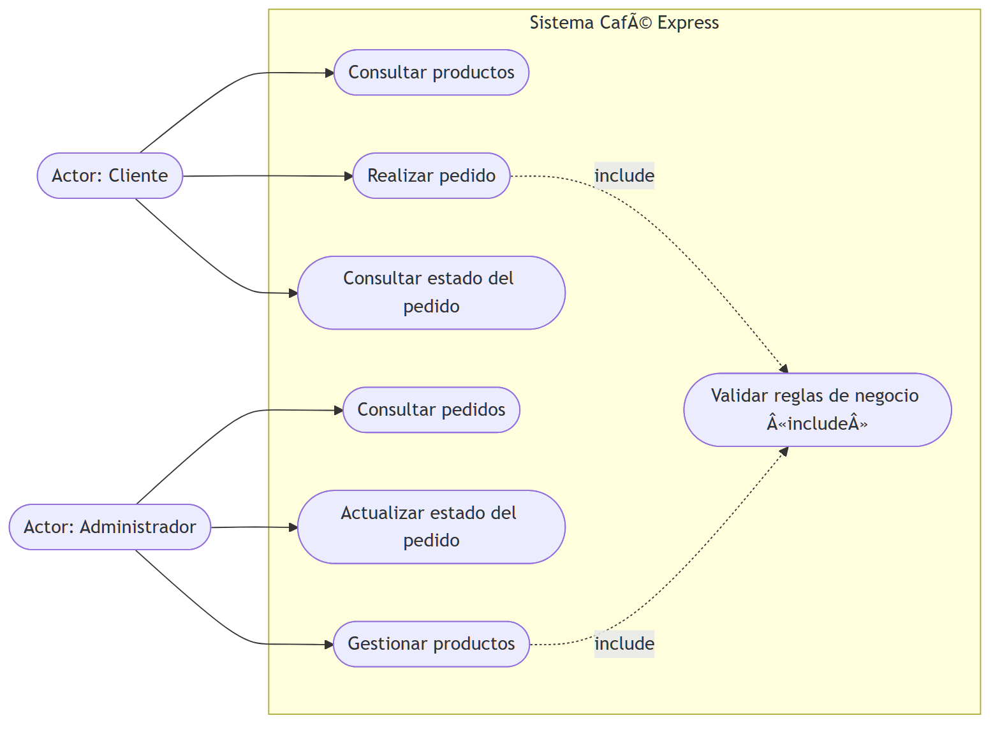
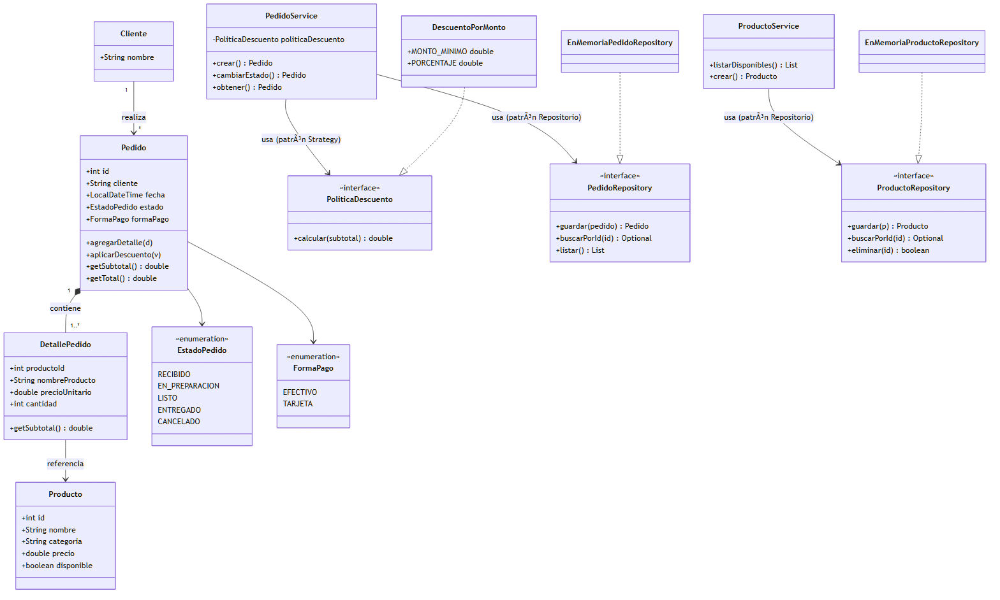
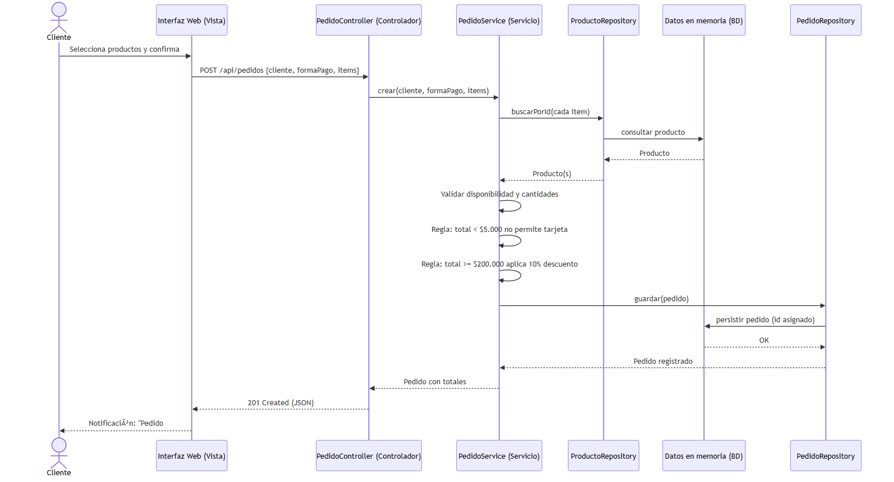
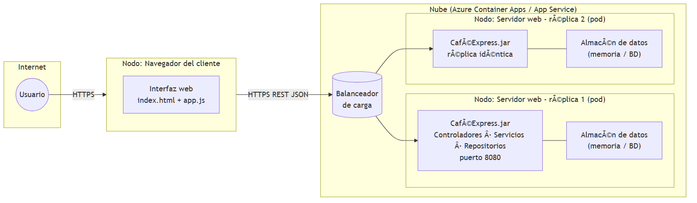

Institución Universitaria Tecnológica del Oriente
Arquitectura de un sistema web para la gestión de pedidos de una cafetería
Informe técnico — Unidad 1 · Actividad 2
Asignatura: Arquitectura de Software — 20262, Nivel 5, Grupo B
Docente: Edward Alfonso Villamizar Vallejo
Integrantes: [Nombre 1] · [Nombre 2] · [Nombre 3]
Fecha: Agosto de 2026
Café Express es una cafetería que registra sus pedidos de forma manual, lo que genera errores de transcripción, pérdida de comprobantes y desconocimiento, por parte del cliente, del estado de su pedido. Este documento presenta el diseño arquitectónico y el prototipo funcional de un sistema web pequeño para gestionar dichos pedidos.
El trabajo siguió seis pasos: (1) análisis de requisitos funcionales y no funcionales; (2) diseño arquitectónico mediante cuatro diagramas UML; (3) investigación y selección de patrones de diseño, incluyendo su pertinencia en entornos de computación en la nube; (4) construcción de un prototipo funcional que evidencia los patrones seleccionados; (5) preparación de la presentación; y (6) este informe.
La decisión central de arquitectura es la separación de responsabilidades: una arquitectura por capas bajo el esquema Modelo-Vista-Controlador, donde cada componente tiene una única responsabilidad y se comunica solo con las capas adyacentes. Esta decisión responde simultáneamente a los requisitos no funcionales del sistema: facilidad de uso, protección de la información, mantenibilidad, extensibilidad y escalabilidad.
Se aplicó la observación del proceso actual (pedidos en papel) junto con la técnica de eventos y actores: identificados los actores (cliente y administrador), se listaron los eventos del negocio que ellos disparan y de cada evento se derivó un requisito funcional.
| ID | Requisito | Actor | Descripción |
|---|---|---|---|
| RF-01 | Consultar los productos | Cliente | Catálogo con nombre, categoría, precio y disponibilidad. |
| RF-02 | Realizar los pedidos | Cliente | Selecciona productos y cantidades, indica nombre y forma de pago; el sistema valida reglas y registra. |
| RF-03 | Consultar el estado del pedido | Cliente | Con el número de pedido consulta estado, detalle y totales. |
| RF-04 | Consultar los pedidos | Administrador | Lista todos los pedidos con cliente, estado y valores. |
| RF-05 | Actualizar el estado del pedido | Administrador | Solo transiciones válidas: RECIBIDO → EN_PREPARACION → LISTO → ENTREGADO o CANCELADO. |
| RF-06 | Gestionar productos | Administrador | Crear, editar precio, habilitar/deshabilitar y eliminar productos. |
| ID | Requisito | Decisión arquitectónica que lo satisface |
|---|---|---|
| RNF-01 | Fácil de utilizar | Interfaz web de una sola página con tres pestañas (Menú, Mi pedido, Administración); API REST coherente. |
| RNF-02 | Proteger la información | Verificación de credenciales en un único punto (controladores) con token X-Admin-Token; evolución prevista hacia Identity Server (OAuth2/JWT). |
| RNF-03 | Fácil de mantener | Capas MVC + patrón Repositorio: módulos pequeños con responsabilidad única. |
| RNF-04 | Agregar funcionalidades | Interfaces e inyección de dependencias: nuevos comportamientos sin reescribir código existente. |
| RNF-05 | Escalabilidad | Contenedor Docker sin dependencias nativas: escala verticalmente (más recursos al nodo) u horizontalmente (réplicas/pods detrás de balanceador de carga). |
Los diagramas están pre-renderizados como imágenes (carpeta informe/img/);
las fuentes editables en sintaxis Mermaid permanecen en docs/02-diagramas-uml.md.

Figura 1. Casos de uso del sistema Café Express.
Descripción: el cliente consulta el catálogo, realiza pedidos y consulta su estado; el administrador consulta/actualiza pedidos y gestiona productos; los casos de escritura incluyen la validación de reglas de negocio.
Justificación: define la frontera del sistema y sus actores antes de diseñar; de él se derivan los módulos de presentación y los endpoints REST, dando trazabilidad entre requisitos y componentes.

Figura 2. Diagrama de clases: dominio, servicios e interfaces de repositorio.
Descripción: Pedido agrega uno o más DetallePedido que referencian un Producto; la lógica vive en los servicios; el acceso a datos queda detrás de interfaces; la regla de descuento se encapsula en una estrategia intercambiable.
Justificación: evidencia la separación de responsabilidades y el desacoplamiento: cambiar el almacenamiento solo exige otra implementación del repositorio, sin tocar servicios ni controladores.

Figura 3. Secuencia del caso de uso «Realizar pedido».
Descripción: recorre el flujo desde la acción del usuario hasta la persistencia y la notificación de confirmación.
Justificación: demuestra que cada mensaje cruza una sola frontera por capa; si una regla falla, el servicio responde y el controlador lo traduce a HTTP 422 — la interfaz nunca accede directamente a los datos.

Figura 4. Despliegue en la nube con réplicas horizontales (pods).
Descripción: el navegador ejecuta la vista; el balanceador de la plataforma distribuye las peticiones HTTPS entre réplicas idénticas; cada réplica accede a su almacén de datos.
Justificación: documenta dónde se ejecuta cada componente y cómo crece el sistema: horizontal = agregar pods sin reconstruir nada; vertical = más RAM/CPU al nodo. Al ser un JAR sin dependencias nativas, la misma imagen corre igual en local o en la nube.
Se investigaron los catálogos clásicos (Gamma et al., 1994; Fowler, 2002) y los patrones para la nube (Microsoft, 2024). La selección y los descartes se justifican a continuación.
| Patrón | Decisión | Justificación |
|---|---|---|
| MVC (capas) | Seleccionado | Vista, controladores y modelo/servicio separados; responde a RNF-03 y evita el antipatrón de lógica, interfaz y datos mezclados en un solo bloque. |
| Repository | Seleccionado | Los servicios ignoran dónde están los datos; migrar a SQL en la nube exige solo otra implementación. |
| Strategy | Seleccionado | PoliticaDescuento encapsula la regla del 10 % sobre $200.000; nuevas promociones se agregan sin modificar PedidoService. |
| Inyección de dependencias | Seleccionado | App compone repositorios → servicios → controladores por constructor: bajo acoplamiento y punto único de composición. |
| Singleton | Descartado | Estado global difícil de probar; el efecto se logra inyectando un repositorio único desde App. |
| API Gateway / BFF | Diferido | Pertinente con varios microservicios; sobreingeniería para un módulo único. |
| Circuit Breaker | Diferido | Aplica ante dependencias externas que pueden fallar; aún no existen. |
| CQRS | Diferido | Útil a gran volumen; duplicaría esfuerzo a esta escala. |
Java 26 puro con el servidor HTTP integrado del JDK, sin Maven ni librerías externas; vista SPA con
HTML/CSS/JS vanilla; almacenamiento en memoria sembrado con el catálogo. La estructura refleja la arquitectura:
controller/ (MVC), service/ (reglas + Strategy), repository/
(interfaces + implementación en memoria), domain/ (entidades), static/ (vista)
y App.java (composición e inyección de dependencias).
# Local (solo JDK): javac -encoding UTF-8 -d bin (Get-ChildItem -Recurse src -Filter *.java).FullName java -cp bin cafeexpress.App # http://localhost:8080 # Contenedor (nube): docker build -t cafe-express . docker run -p 8080:8080 cafe-express
Token de administración demostrativo: admin123. En producción se sustituiría por un Identity Server (OAuth2/JWT) sin tocar la lógica de negocio.
Bass, L., Clements, P., & Kazman, R. (2012). Software architecture in practice (3.ª ed.). Addison-Wesley.
Fowler, M. (2002). Patterns of enterprise application architecture. Addison-Wesley.
Gamma, E., Helm, R., Johnson, R., & Vlissides, J. (1994). Design patterns: Elements of reusable object-oriented software. Addison-Wesley.
Microsoft. (2024). Cloud design patterns. https://learn.microsoft.com/azure/architecture/patterns/
Sommerville, I. (2011). Ingeniería de software (9.ª ed.). Pearson Educación.